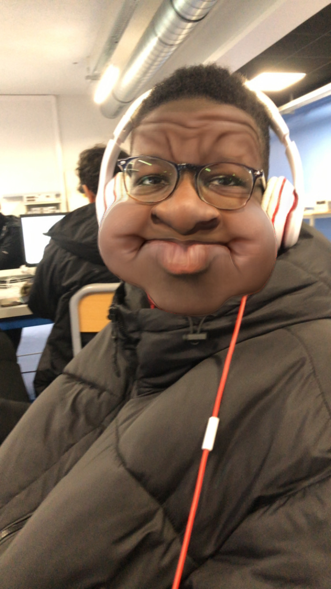

Fatty Mouhamad-Al-Amine
Adresse :3 Rue Beaumarchais
Téléphone :06 51 70 96 19
Email :mouhamadfatty@gmail.com
Date de naissance :10/11/2010

Objectif
Élève de seconde option CIEL au lycée César Baggio, je recherche un stage d’observation pour découvrir le monde professionnel, en particulier dans les domaines de l’informatique, du numérique ou de la technologie.
Formation
- Seconde Professionel – Option CIEL
- Lycée César Baggio, Lille (2025–2026)
- Compétences vues : bases des réseaux, découverte des systèmes informatiques, initiation au développement.
Compétences
Travail en équipe
Organisation
Outils numériques
HTML (bases)
Expériences
- Projets scolaires : exposés, travaux en groupe, recherches, utilisation d’outils numériques.
- Compétences personnelles : autonomie, gestion du temps, curiosité pour l’informatique.
Centres d’intérêt
- Jeux vidéo (stratégie, aventure, compétitifs)
- Informatique et nouvelles technologies
- Sport/foot/basket